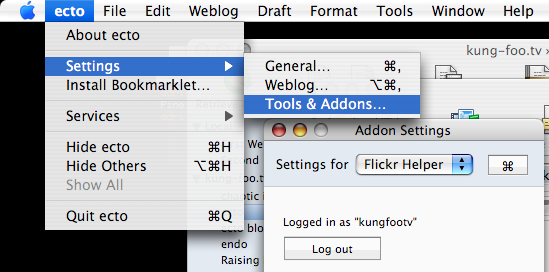

Flickr Helper
 Flickr Helper is a new add-on that is included in ecto by default (ecto3b23 and up). Its purpose is to easily search for and browse pictures from Flickr. Once you've found one, you can then insert a smaller version of the picture it in your blog post complete with a link to the original page on Flickr. To use it, just open an existing or new draft, place the insertion point where you want the Flickr picture to appear and click on "Flickr Helper" in the toolbar (or choose the commend from the Tools menu in the menu bar). A sheet slides down with 5 different search options: Your pictures, your contacts, your sets, your groups, or tags.
Flickr Helper is a new add-on that is included in ecto by default (ecto3b23 and up). Its purpose is to easily search for and browse pictures from Flickr. Once you've found one, you can then insert a smaller version of the picture it in your blog post complete with a link to the original page on Flickr. To use it, just open an existing or new draft, place the insertion point where you want the Flickr picture to appear and click on "Flickr Helper" in the toolbar (or choose the commend from the Tools menu in the menu bar). A sheet slides down with 5 different search options: Your pictures, your contacts, your sets, your groups, or tags.

You can search for tags anytime, but if you want to search in the other options, you will need to authorize first. You can do that via the Tools & Add-ons settings. I recommended logging into your Flickr account via the browser first before authorizing the Flickr Helper add-on.

Other than that, using Flickr Helper is pretty straight-forward. If you have questions, feel free to ask in the Support Forum.
The image browser in the add-on is an implementation of a simplified version of MUPhotoView.
Reactions on this post